Parish notices
Thursday 22:00
Every Thursday
Live voices under the gilt. Who’s singing is announced every week on Instagram, and tables go fast.
Booking is kindly requested.
Open every afternoon
Velvet, gold leaf and Agua de Dénia, served nowhere else.
I The museum
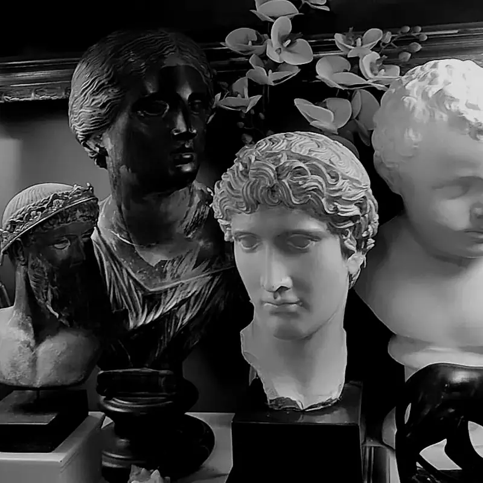
Catalogue entryInv. MMXXI-001
Eight pieces from a collection too big for a website. Swipe.
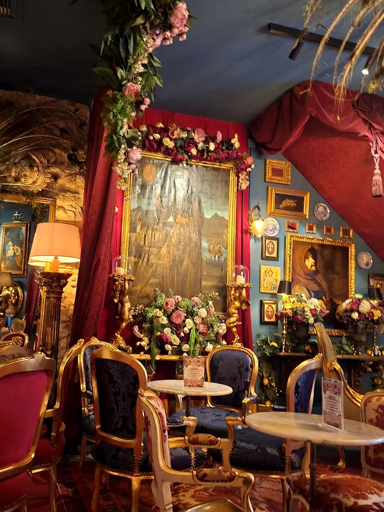
Crimson velvet, a large gilt-framed canvas, flowers and Isabelline armchairs. A seat inside the painting.
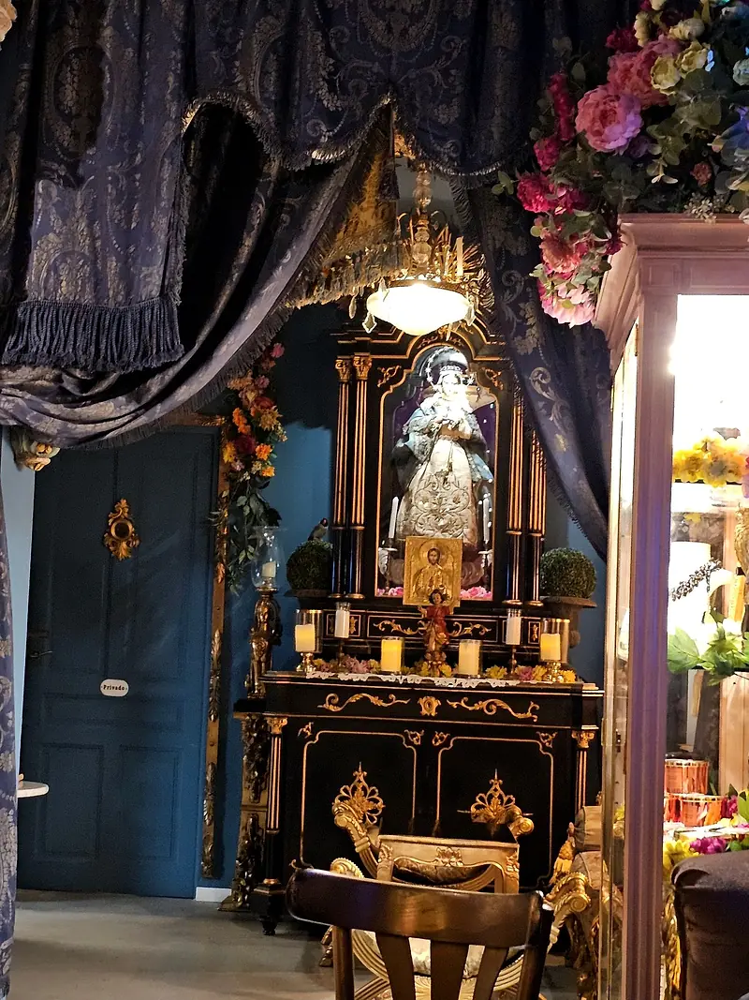
In the Gloria room. A 17th-century carving, restored in-house: her skin tone and the blue of her mantle had to be brought back.
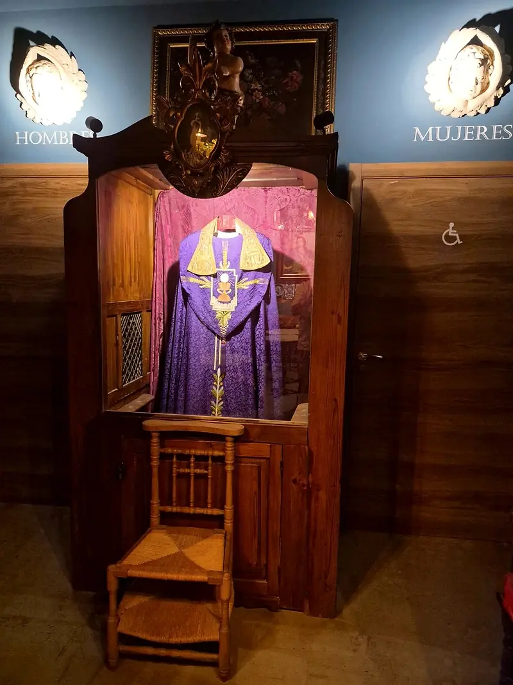
Carved wood, a purple chasuble and a kneeler, right between the men’s and women’s toilets. Confessions heard; absolutions served at the bar.
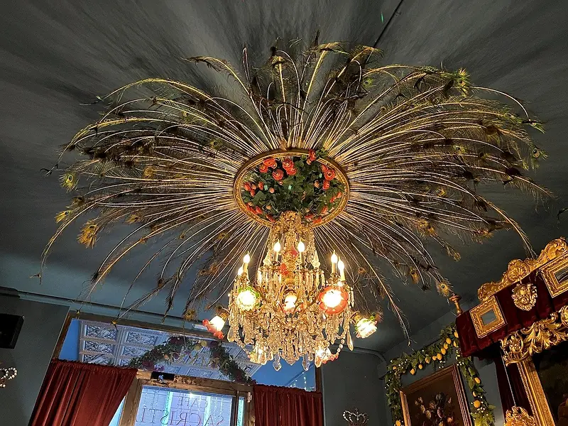
A fan of peacock feathers with a crown of roses, and the chandelier hanging from its centre. Best to walk in looking up.
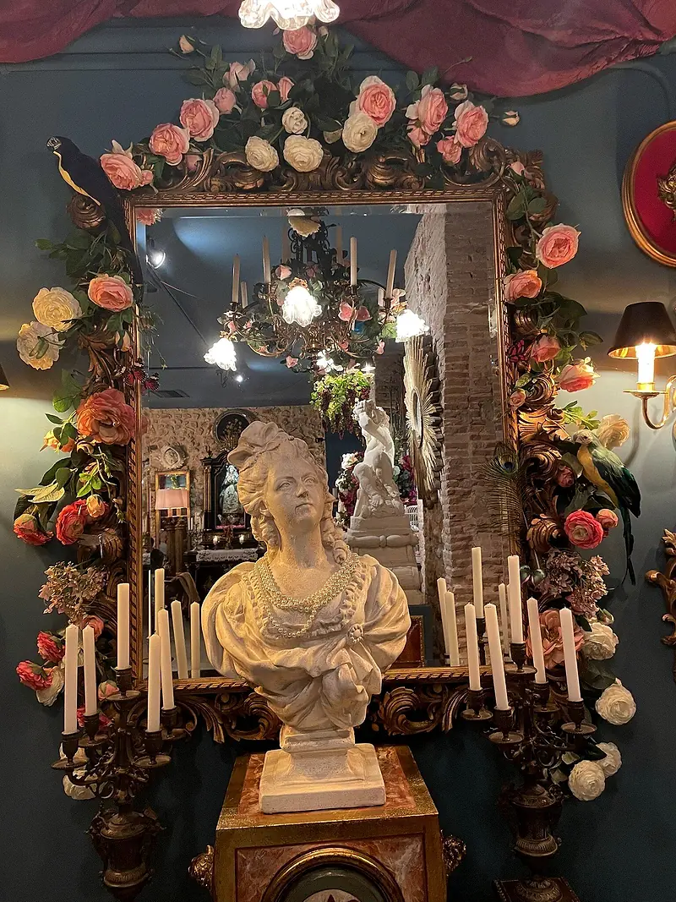
Roses, candelabra and a bust that watches the room without blinking.
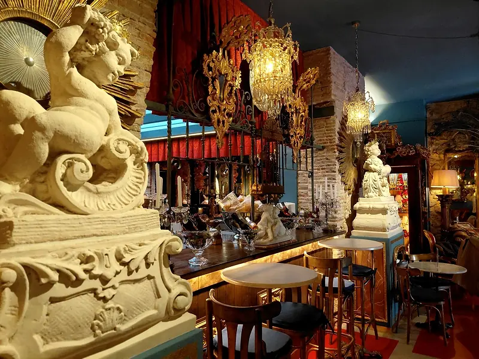
He keeps watch over the bar from his pedestal. Nobody has ever seen him order.
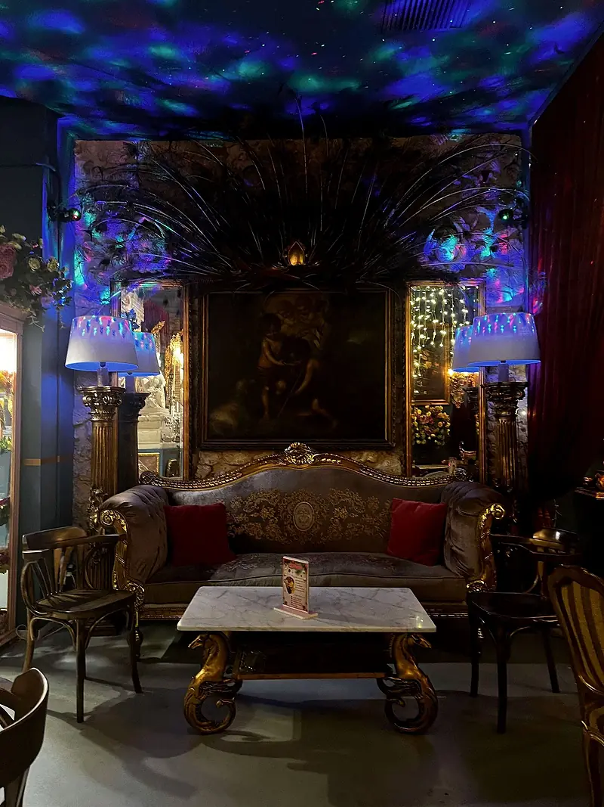
A sky of lights above the gilded sofa. For long conversations.
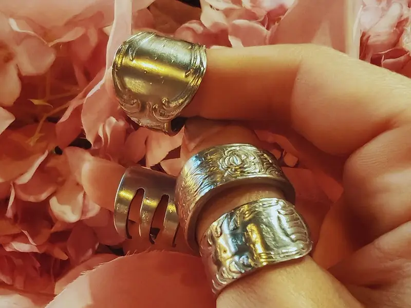
Jewellery by the artist Natalia, including rings made from spoons and forks. Cutlery that ends up in your hand, but not for eating.
II The spirited waters
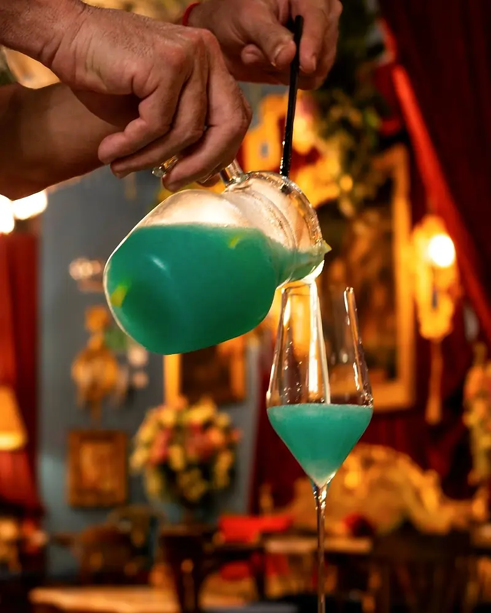
The house’s most emblematic drink and the parishioners’ favourite: lemon, a sweet touch of curaçao, the sparkling finish of cava and a secret blend that never leaves the sacristy.
Six secret ingredients
Tap a seal.
Served in a carafe, for sharing. And only here.
The family of aguas
III The menu
The house missal: pull a ribbon. This is a selection; the full menu and prices are at the bar.
The house missal
Agua de Dénia comes in a carafe: order it to share.
Lemon, curaçao, cava and a secret blend. In a carafe.
Only hereThe Valencian classic, made the house way.
The one that carries the name of the house.
Ask at the bar.
The house missal
Classics and signatures. And alcohol-free, for an early start tomorrow.
Coconut liqueur, coconut batida and triple sec, with cinnamon preserve and orange peel.
SignatureFor long afternoons.
To start the tardeo.
The ginger classic.
Bitter, old-school.
Alcohol-free cocktails: ask for today’s.
The house missal
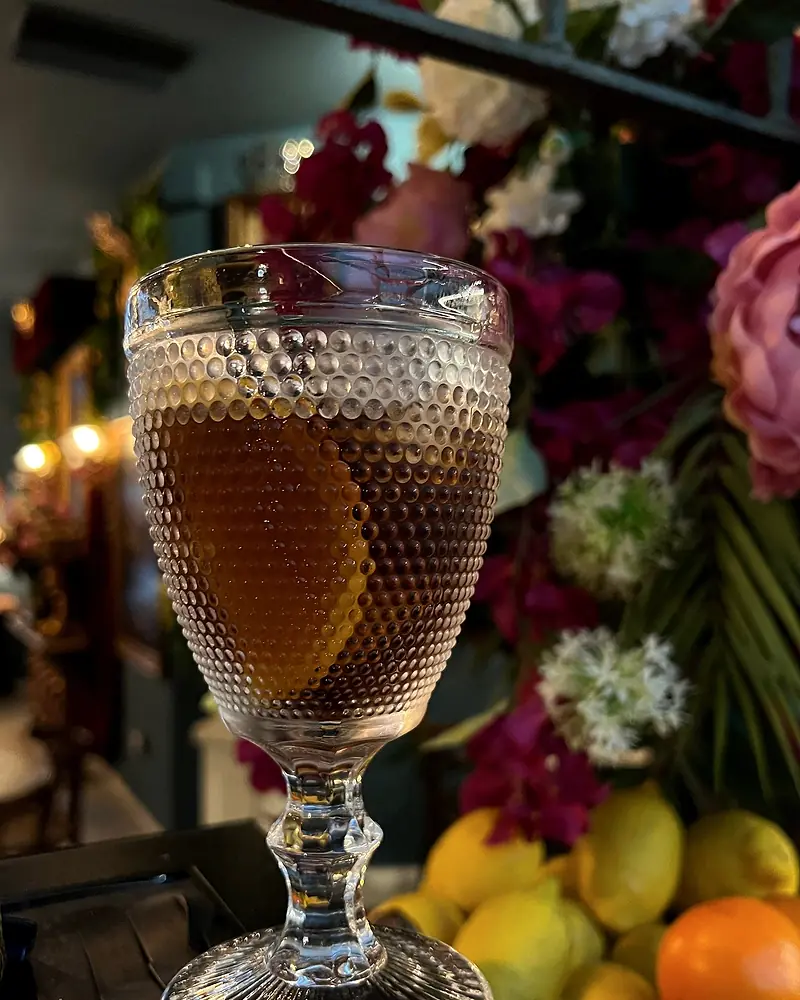
From a cut-crystal glass of vermouth to champagne for the big occasions.
In a cut-crystal glass, with its orange peel.
For whatever needs celebrating.
The base of the aguas, also on its own.
Fresh, for the afternoon.
Sweet, by the small glass.
The house missal
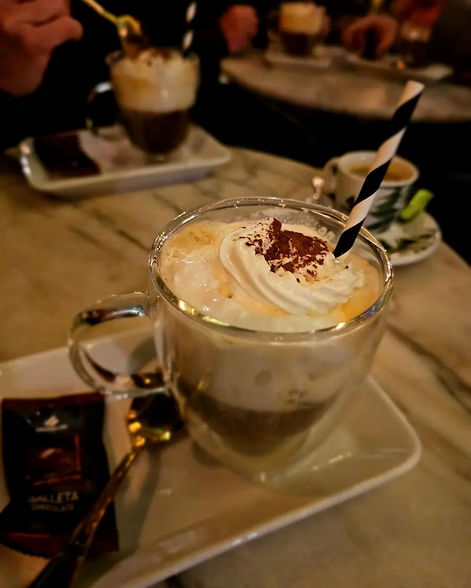
Homemade cakes to make the afternoon last.
And the rest of our coffees and teas.
Homemade.
Homemade.
Homemade, and better with a cappuccino.
The house missal
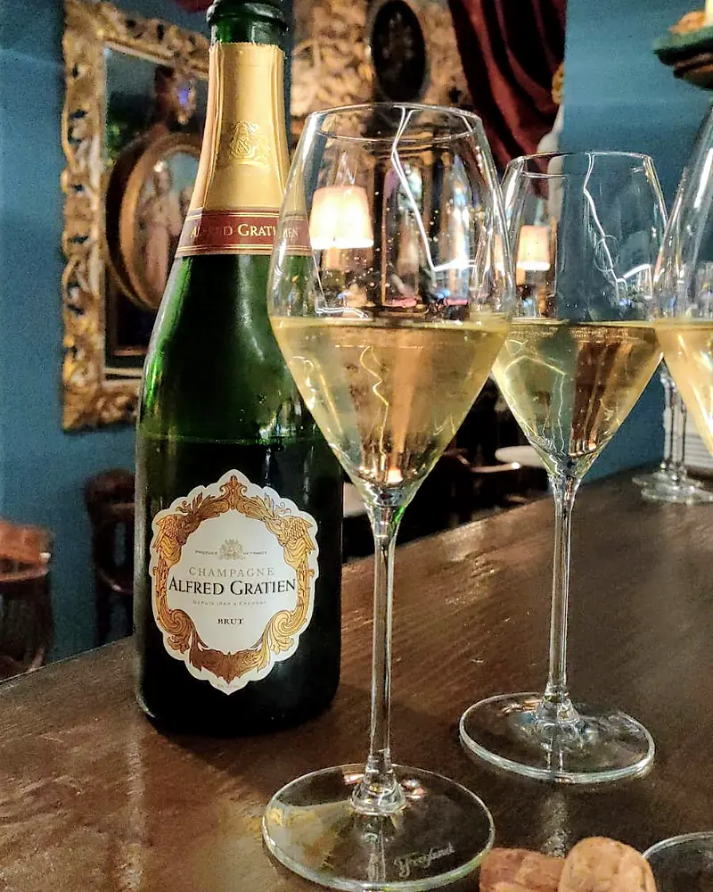
For the first round, and the second.
To nibble while your drink arrives.
For sharing.
Spanish potato salad, as tradition demands.
Ask what’s on today.
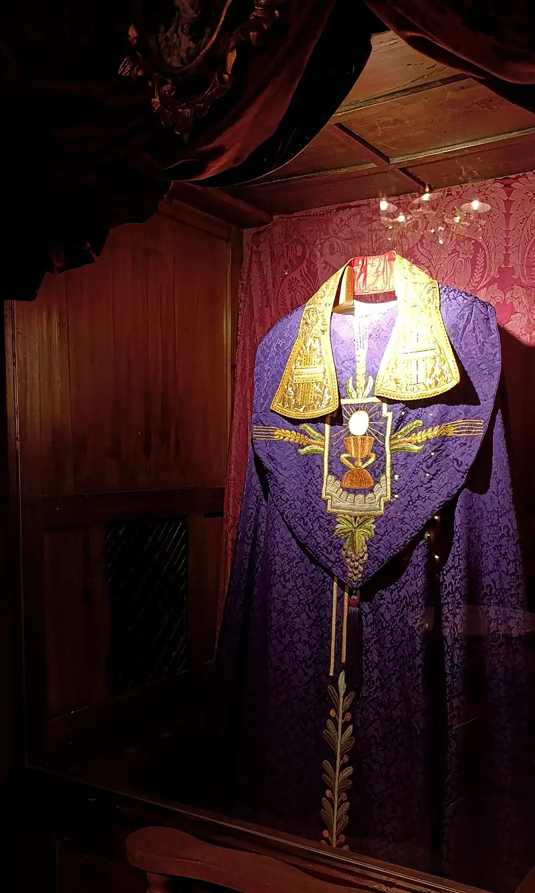
IV The confessional
—Ave María Purísima. —Conceived without sin. What is your body asking for tonight?
Absolution
Penance:
V Live music
What’s on at the house, pinned to the parish noticeboard.
Parish notices
Every Thursday
Live voices under the gilt. Who’s singing is announced every week on Instagram, and tables go fast.
Booking is kindly requested.
Tardeo Thursday, Friday and Saturday, from 16:00
Special nights Valentine’s Day, the April Fair, New Year’s Eve
At the house Fashion shows, readings and the odd surprise
VI What the parishioners say
Visitors’ book
«A magical, one-of-a-kind place in Denia.»
«Never been into such a beautiful bar.»
«An impressive place you can’t miss.»
«…worth visiting for the decor alone.»
«We loved it: surprising, tasteful decor.»
«Unbelievably creative interior!»
Margin note: one traveller wrote that it was as if Dalí had redesigned Versailles… in Dénia.
VII Visit us
| Monday | 17:00 – 01:00 |
|---|---|
| Tuesday | 17:00 – 01:00 |
| Wednesday | 17:00 – 01:00 |
| Thursday | 16:00 – 02:00 |
| Friday | 16:00 – 02:00 |
| Saturday | 16:00 – 02:00 |
| Sunday | 17:00 – 23:00 |
Hours published by La Sacristía in April 2026. They may change on public holidays and event days.